Podcasts
A growing list of our podcasts to satiate your curiosity

15 May 2020
Podcast 0: An Introduction
Welcome to A Method to the Madness, the podcast where we discuss, analyse and otherwise ponder our favourite films and TV programs.
Listen
15 May 2020
1917: Revolutionising War Movies
Join us for our first movie podcast, discussing Sam Mendes' ambitious, phenomenal war (but not really war) film, 1917.
Listen

22 May 2020
Parasite: Oscar-Worthy?
Did Bong Joon-ho deserve his Oscars? What is Patrick's new analysis theory? All this and more in our episode on the Korean film, Parasite.
Listen
29 May 2020
Uncut Gems: The Sublimity of Futility
Why is Uncut Gems so nerve-wracking? Is it the evocation of cosmic dread? Or just Adam Sandler's seedy acting? Join us to find out!
Listen
05 June 2020
Contagion: An Eerie Prescience
Though almost a decade old, Steven Soderbergh's Contagion explores a mass flu pandemic uncannily akin to the COVID-19 calamity.
Listen
12 June 2020
Joker: The Evolution of an Archetype
The Joker is perhaps one of the most compelling villains in the history of storytelling. Patrick explains why.
Listen
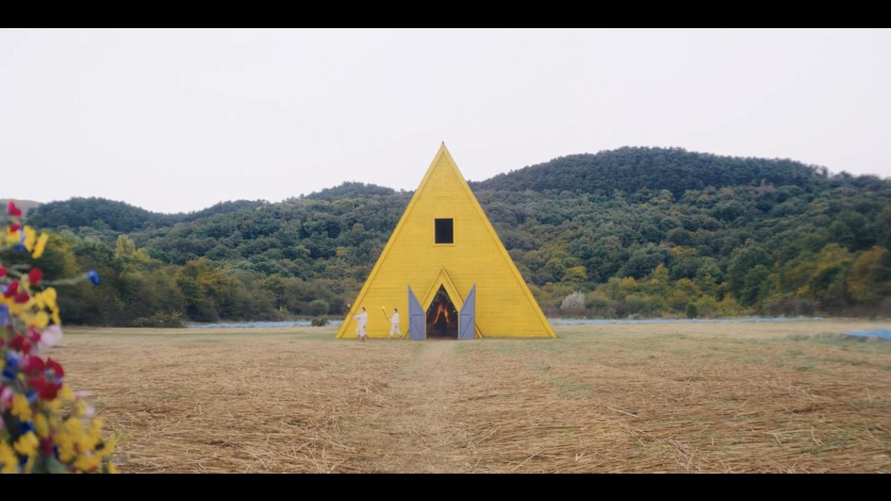
20 June 2020
Midsommar: The Dissonance of Culture
Rejoice as we celebrate this year's Midsummer by discussing Ari Aster's fairy tale of psychedelics, menstrual beverages and lots of murder.
Listen
26 June 2020
Marriage Story: Love and Lawyers
Romance films can be tacky but Marriage Story is certainly not. This gritty film by Noah Baumbach demonstrates the beautiful complexity of love.
Listen
03 July 2020
Ad Astra: Can We Go Too Far?
Is exploring space necessary? James Gray answers this question with a resounding 'no' in his introspective tale exploring spacefaring.
Listen
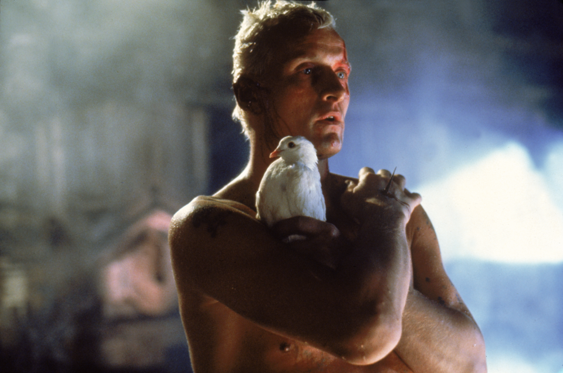
10 July 2020
Blade Runner: Defining Humanity
The intriguing but arguably slow Blade Runner film is revitalised by its beautiful sequel. Join us as we investigate both.
Listen
17 July 2020
The Lighthouse: Terror of the Unknown
Robert Eggers' second feature film is as historically immersive as his first. We discuss the nature of the terror that this film so aptly evokes.
Listen
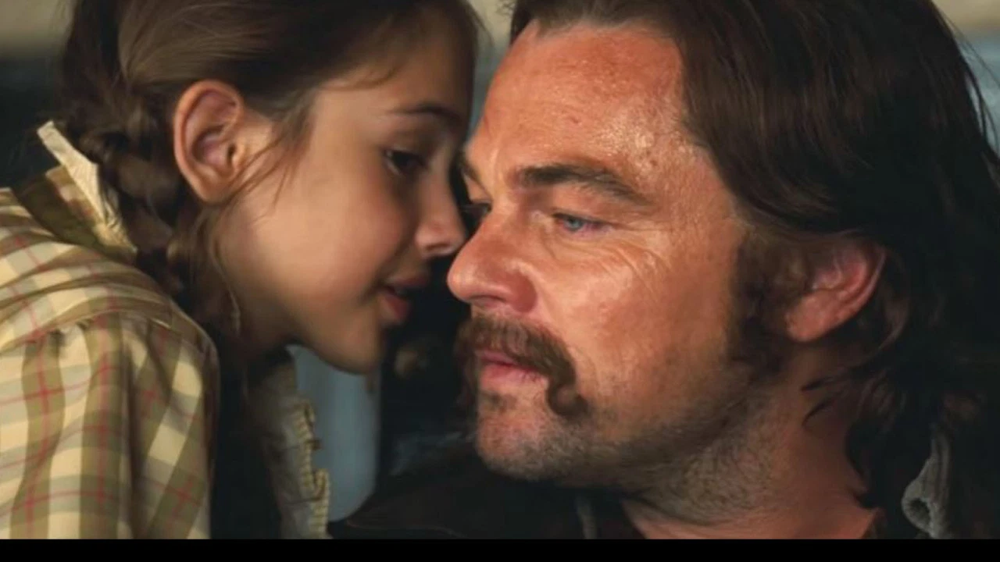
24 July 2020
Once Upon a Time in Hollywood: A Simpler Era
This time, Tarantino takes us to the illustrious culture of 60s Hollywood in another film of almost aimless absurdism.
Listen
31 July 2020
Avengers Endgame: The Philosophy of Conclusions
As a true hero once said, "part of the journey is the end". Certainly, this Homeric coda will never be forgotten as the end of the journey that is The Infinity Saga.
Listen
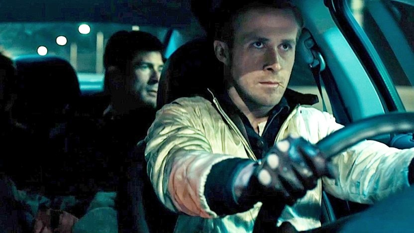
07 August 2020
Drive: A Gritty and Gory, Neon Noir
There seems to be a spate of films narrating the tale of a getaway driver absolving himself from a criminal lifestyle. Why does such a simple, generic plot work?
Listen
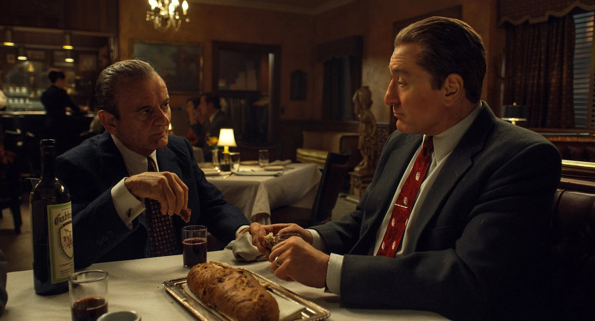
14 August 2020
The Irishman: An Extraordinary, Unglamorous Life
Though contestably long, Scorsese's gangster biopic shows us the lonely truth behind the ostensibly suave but truly woeful lives of gangsters.
Listen
21 August 2020
Get Out: The Nuances of Political Storytelling
Successfully teaching a lesson in film is not easy; however, Jordan Peele's racial horror is the perfect balance between entertainment and edification.
Listen
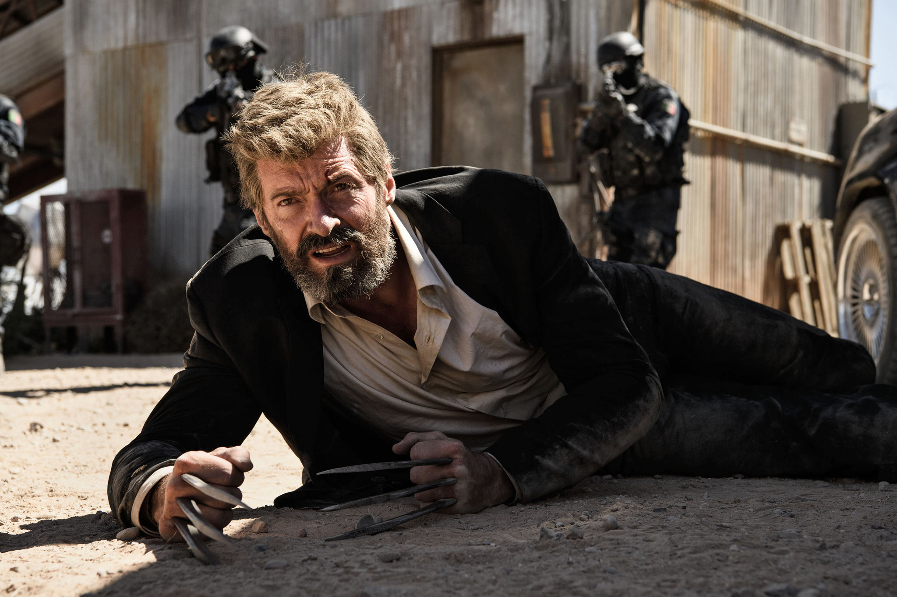
28 August 2020
Logan: The Throes of Heroism
Always, a hero will personally suffer in the quest for justice. This side of heroism is rarely explored in such an inglorious way that is seen in Logan.
Listen
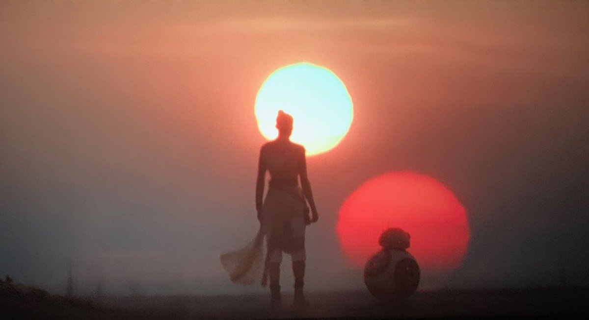
04 September 2020
Star Wars The Rise of Skywalker: All Hail Disney
Films are mostly for money but sometimes they can become too corporate. This is the unfortunate downfall of the finale of the trilogy of trilogies of Star Wars.
Listen
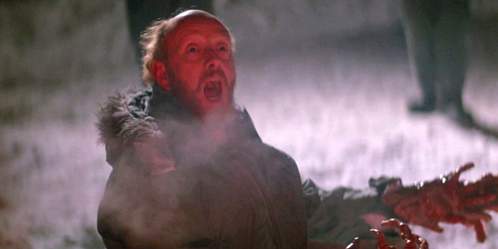
18 September 2020
The Thing: Crafting Uncertainty
Though decades old, John Carpenter's 1982 sci-fi horror film still manages to make any viewer shiver while still providing quality mystery in its narrative.
Listen
02 October 2020
La La Land: A Consummate Musical
We discuss Damien Chazelle's emotionally and sensorily beautiful La La Land with our first ever guest, David McNeill.
Listen
16 October 2020
Brick: Adoration and Evolution
Explore with us the cult classic, Brick, the directorial debut of the acclaimed (unless you're a Star Wars fan) Rian Johnson.
Listen
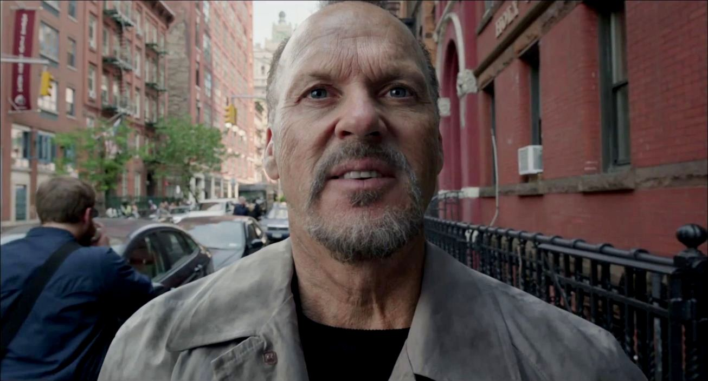
30 October 2020
Birdman: Art Imitating Life
Iñárritu's one-shot phenomenon deserves every award it received, and more. We discuss what makes this a true cinematic masterpiece.
Listen
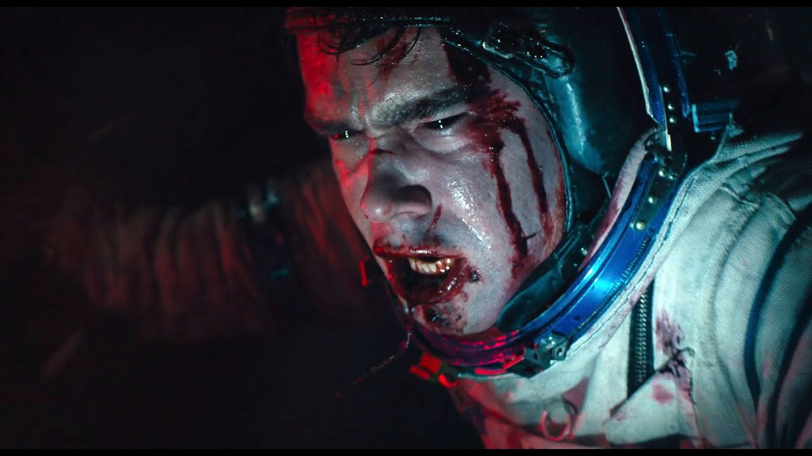
13 November 2020
Sputnik: The Russian Identity and Aliens
This grotesque alien horror by Abramenko not only entertains, but serves to critique the final years of the Soviet Union.
Listen
27 November 2020
The Social Network: Money vs Friendship
The creation of the largest social media platform in the world is surely filled with contention. So then how does Fincher portray this event with such impartiality?
Listen
11 December 2020
True Grit: A Good Ol' Time
Though it will be forgotten with time, True Grit is undeniably another competent film from the legendary Coen brothers.
Listen
25 December 2020
Magnolia: Chance or Choice
To suit Christmas, a time of shared emotion across the planet, we discuss the intricate intterconnectedness between all human lives evoked in this mysterious film.
Listen
08 January 2021
American Psycho: Sadistic Societies
The late 20th century was a strange time for human culture. This is what Harron's most well-known film explores.
Listen
12 February 2021
Ran: The Edge of Chaos
This Shakespearean adaptation is perhaps one of the most beautiful films of all time, all while commenting on the most fundamental aspects of human nature.
Listen
Schindler's List">
12 March 2021
Schindler's List: A Cinematic Legend
This legendary film explores one of the darkest periods of human history with grace and tact and is truly unflawed.
Listen
11 April 2021
Casino Royale: Breaking Bonds
Our favourite mysoginistic, hedonistic secret agent experiences cultural change during times of political transition.
Listen
25 April 2021
Predicting the 2021 Oscars
Doing something a little different, we make a bet on which nominations of the 93rd Academy Awards will win.
Listen
03 May 2021
Predicting the 2021 Oscars: Epilogue
We discuss the aftermath of the 93rd Academy Awards ceremony which was filled equally with expected and unexpected winners.
Listen
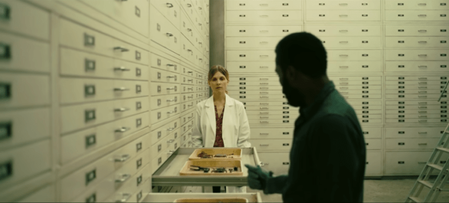
02 July 2021
Tenet: The Logic of Free Will
We investigate Nolan's wacky world of entropy reversal, discussing free will, the existence of parallel worls and the fidelity of Tenet in the time travel genre.
Listen
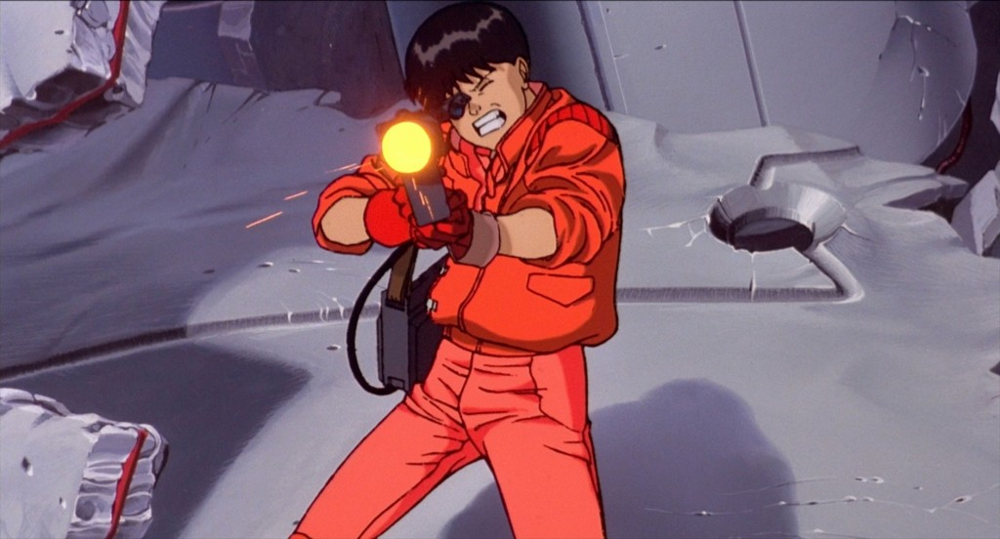
04 March 2022
Akira: Awe and Animation
This absolutely stunning film broke budgets and brought anime to the world, all while providing an apt criticism of Japanese and human society.
Listen
18 March 2022
Quantum of Solace: Integral yet Unremarkable
While considered the worst of the Daniel Craig 007 pentalogy, this film has some redeeming features, building the world for subsequent films.
Listen
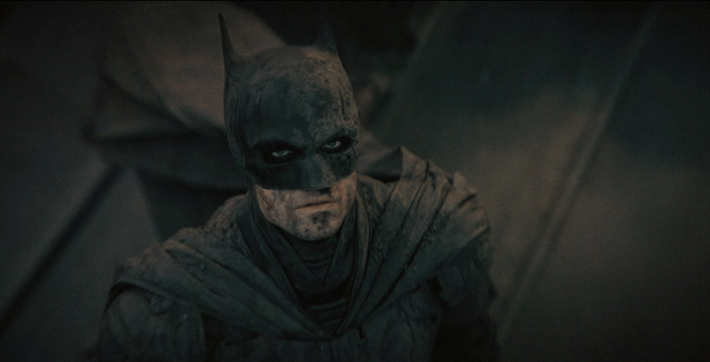
08 April 2022
The Batman: The Film We Deserve
This gothic interpretation of the Batman has cult-growing potential and is a refreshing new take on one of film's most complex superheroes.
Listen
07 May 2022
Skyfall: A Welcome Change
We discuss the unconventional portrayal of James Bond and Skyfall's links to at-the-time relevant political topics.
Listen

03 June 2022
Dune: Game of Thrones, in Space
We discuss Villeneuve's sci-fi epic Dune from its truly breathtaking score to its construction of a sadistic world set in a possible far future.
Listen
24 June 2022
Spectre: Underrated?
After the high of Skyfall, Spectre was met with discontent despite being directed by Sam Mendes and sporting a massive budget. What happened?
Listen
03 September 2022
El Camino: The Good Ending
In this crossover episode, we review the ending to Jesse Pinkman's story and how Vince Gilligan has mastered the conclusion to perhaps the best TV show ever.
Listen
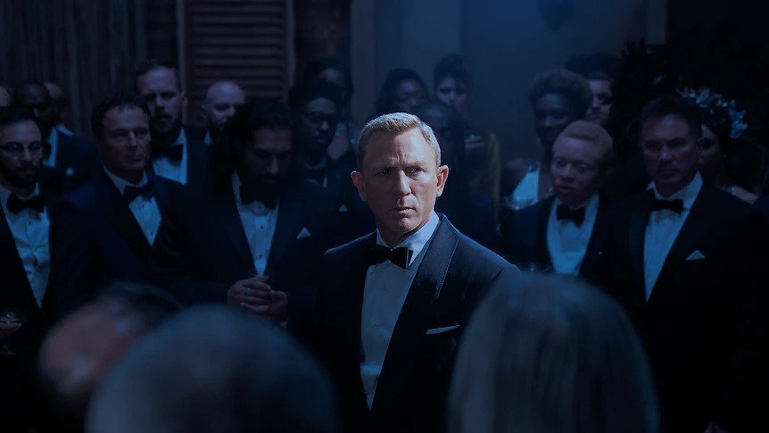
29 October 2022
No Time to Die: The Function of Man
We finish our series on Daniel Craig's 007, delving into this explosively exciting film. We discuss the fitting conclusion to Bond's arc and rank the pentalogy.
Listen
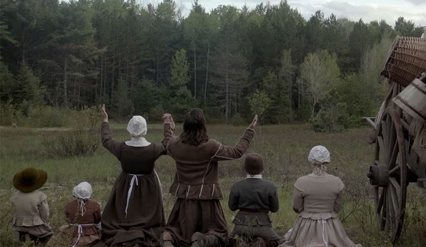
13 August 2023
The Witch: An Eggers' Folktale
We discuss Robert Eggers' underrated but superb debut film, exploring its folk origins and praising its uniquely terrifying atmosphere.
Listen
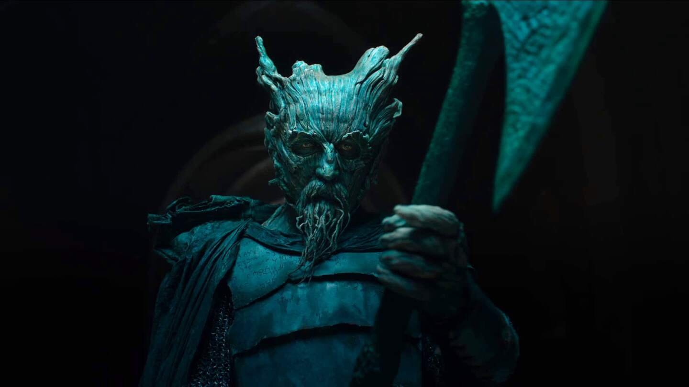
1 October 2023
The Green Knight: Myth in Modernity
The Green Knight is a brilliant adaptation of a centuries-old Arthurian poem. We discuss its history, its themes and its place in our unique era.
Listen
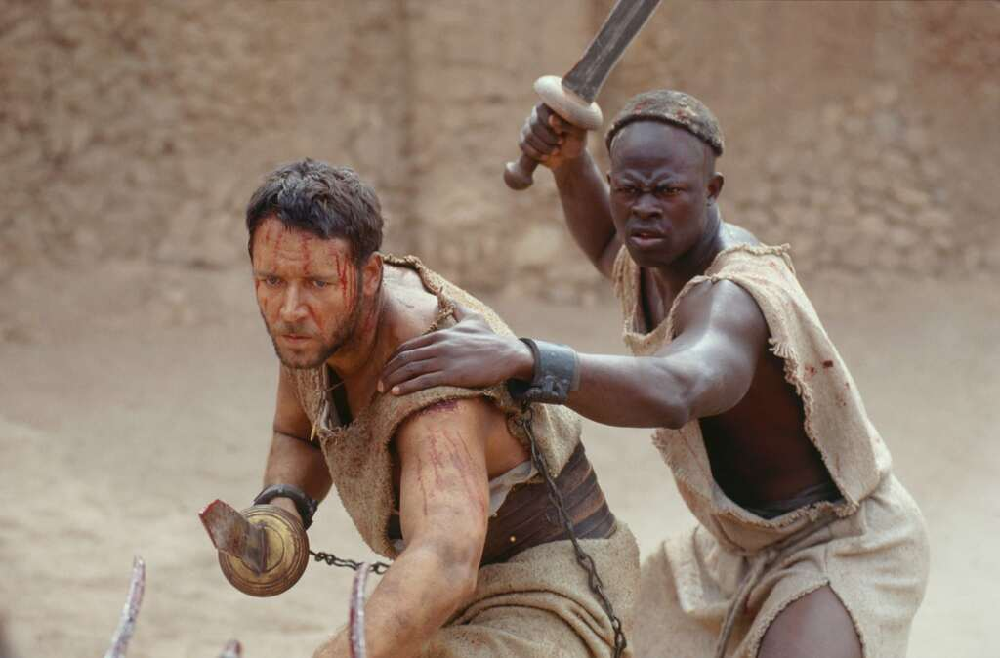
3 February 2024
Gladiator: Echoing in Eternity
Gladiator is a true classic, uniting everyone at the start of a new millennium. We discuss this epic tale and how it fits into the human ethos.
Listen
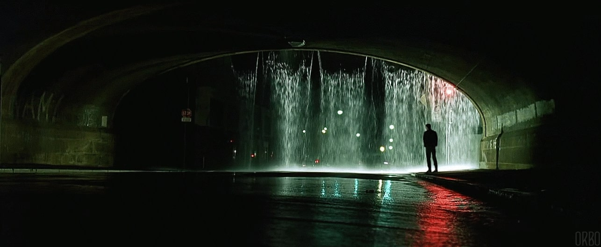
10 June 2024
The Matrix Quadrilogy: Waking
The first instalment in our Matrix Quadrilogy series, where we discuss the original Matrix film that defined an era.
Listen
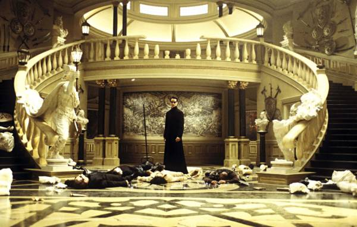
17 June 2024
The Matrix Quadrilogy: Awake
We discuss the explosive sequel to the original Matrix film, commenting on its politics and sexuality.
Listen
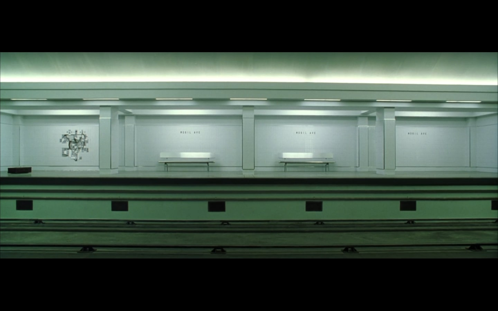
24 June 2024
The Matrix Quadrilogy: Awoken
In a parallel universe, this may be the end of this podcast series. We pretend we're there for a second as we discuss the conclusion to the original Matrix trilogy.
Listen
1 July 2024
The Matrix Quadrilogy: Woke
We reach the end of our series, discussing the disappointing conclusion to the Matrix quadrilogy that was destined to fail.
Listen